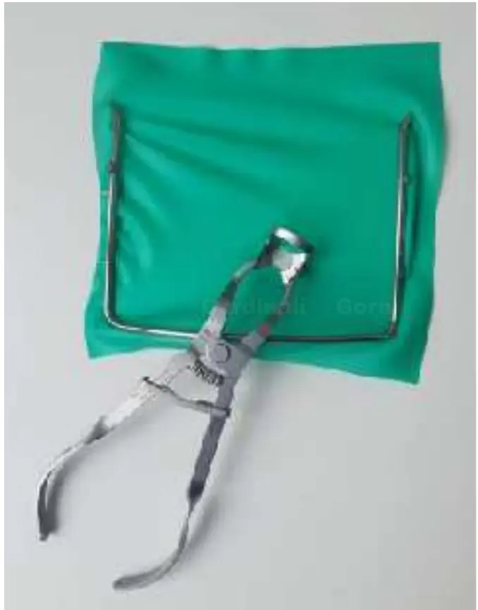
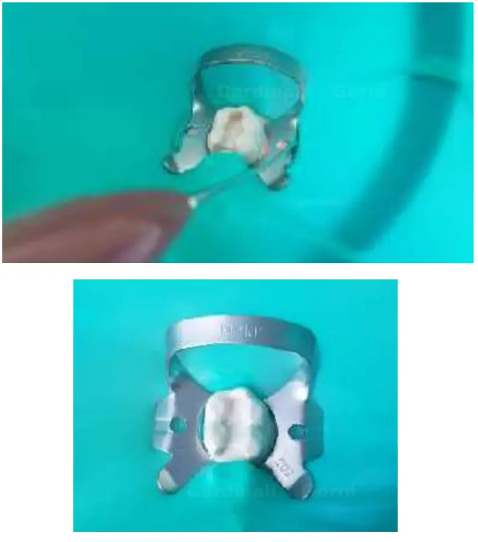

نسخه استخراجشده؛ ترجمه یا تأیید علمی انجام نشده است. وضعیت: captured
بیمار ۴۵ سالهای برای درمان ریشهی مولر اول پایین آمده و با کوچکترین تماس با زبانش عق میزند. دستیار هم امروز نیست. کدام روش گذاشتن رابردم کمترین دستکاری را در دهانش لازم دارد؟

در روش بال، کلمپ و ورق با هم در دهان میروند. کلمپ با بالهایش در سوراخ ورق گیر کرده است.
روش بال دودستی، سریع و ایمن است. اگر کلمپ هنگام گذاشتن از فورسپس رها شود، در سوراخ ورق آویزان میماند و به حلق نمیافتد. بیمار هم دستهای تو را در دهانش حس نمیکند؛ برای همین برای بیمار با رفلکس گگ شدید یا بیماری که از رابردم میترسد مناسبترین روش است.

اشتباه رایج: دندانی که پوسیدگی یا ترمیم مشخصی ندارد، از درون سوراخ شبیه دندان کناری است و دانشجوی کمتجربه دندان کناری را کلمپ میکند. در درمان ریشه، پیش از رابردم با توربین حفرهی دسترسی کمعمقی شروع کن تا دندان نشانهدار شود، بیآنکه وارد فضای پالپ شوی. بقیهی دسترسی را پس از رابردم کامل کن.